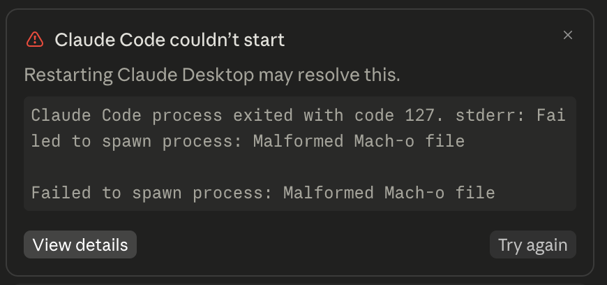
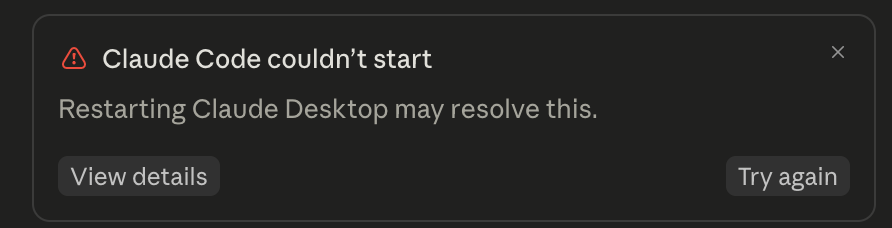

If you (or a patcher tool) modified Claude Desktop's app.asar and now
the Claude Code tab won't start, or the whole app refuses to launch, this page
explains exactly why — and the linked repo fixes it automatically.
This repo covers two distinct crashes with the same root story: a patched app.asar that wasn't repacked and re-signed correctly.
Claude Code couldn't start
Restarting Claude Desktop may resolve this.
Claude Code process exited with code 127. stderr: Failed to spawn process: Malformed Mach-o fileOnly the Claude Code tab fails — chat and the rest of the app work fine.


[FATAL:electron/shell/common/asar/asar_util.cc:144] Integrity check failed
for asar archive (139796d9f05e1667a633fdc5dab1f565760ef18a4584202fdcddc9a94717db6a
vs eb74792783f1d924ccdba5e302805b10e95fa1ff0c6dd04794ba452c14ee2d52)Nothing opens — visible only if you run Contents/MacOS/Claude directly from a terminal. Double-clicking the app just silently fails.
Not specific to any one patcher — any tool that extracts, edits, and repacks app.asar can trigger this if it misses two macOS/Electron-specific details.
Native binaries (*.node, *.dylib, helper executables) must stay unpacked on disk beside app.asar. A repacker that hardcodes which extensions to keep unpacked will swallow anything that doesn't match — like the Claude Code CLI helper — straight into the archive. An archive entry isn't an executable file, so macOS reports it as a corrupt Mach-O when Claude tries to spawn it.
Editing files inside app.asar invalidates the nested signatures of bundled sub-apps and frameworks, but doesn't remove them. Signing on top of stale signatures reports success — the failure only shows up later, on codesign --verify.
Electron can bake the expected SHA-256 hash of app.asar directly into the Electron Framework binary at build time. Once you patch app.asar, that embedded hash no longer matches and Electron hard-crashes at launch instead of degrading gracefully. This is Symptom 2. The supported fix is to disable this fuse with Electron's own @electron/fuses tooling, then re-sign the whole bundle.
You don't need to know which symptom hit you — the repair script fixes both, safely, and can be re-run any time.
Fix Claude.command.macOS may warn the file is from an unidentified developer the first time — right-click it and choose Open to bypass that once.
curl -fsSL https://raw.githubusercontent.com/m4tinbeigi-official/claude-macho-fix/main/repair.sh | bashThe script auto-detects Claude.app (or Claude Beta.app), quits it if running, disables the integrity fuse, strips and re-applies code signatures correctly, verifies the result, and offers to relaunch the app — all with clear pass/fail output at every step. It does not touch any of Claude Desktop's actual functionality or content, and it's safe to run more than once.
Avoid shipping this bug to your users in the first place. The repo ships three drop-in, dependency-light Node.js modules:
| Module | What it does |
|---|---|
lib/unpack.js | Computes the correct unpack glob dynamically from whatever is already unpacked, instead of a hardcoded extension list. |
lib/macos.js | Re-signs a macOS app bundle correctly — strip nested signatures first, sign from scratch, then verify. |
lib/fuses.js | Disables Electron's embedded ASAR integrity fuse via @electron/fuses. |
The GitHub README has the complete technical breakdown, in 10 languages.
Everything above lives in the repo — the script, the modules, and the full explanation.
Go to the claude-macho-fix repo →